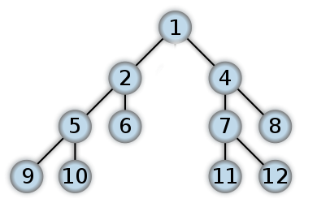

A tree is a hierarchical data structure which is used to store the data. A binary tree is made of nodes where each node has at most 2 references, a "left" reference and a "right" reference and a data element. The hierarchy starts with a top most element called the root node. The references directly under a node are called children and node is referred as parent. Tree/Binary tree is very commonly used data structure. Applications of tree can be found in search algorithms, distance measuring alorithms , genetics algorithms etc. Another version of Binary tree, known as binary search tree provide better traversal that linkedlist.
Types of binary tree
- Full Binary Tree
- Complete Binary Tree
- Balanced Binary Tree
- Binary Search Tree
Traversal of the tree
There are 3 common ways for tree traversal:
- Inorder Traversal:
- Traverse the left subtree by recursively calling the in-order function
- Display the data part of root element (or current element)
- Traverse the right subtree by recursively calling the in-order function
In the above example, traversal will be following manner:
PostOrder Traversal:
- Traverse the left subtree by recursively calling the post-order function.
- Traverse the right subtree by recursively calling the post-order function.
- Display the data part of root element (or current element).
PreOrder Traversal:
- Display the data part of root element (or current element)
- Traverse the left subtree by recursively calling the pre-order function.
- Traverse the right subtree by recursively calling the pre-order function.

Traversal for the above example
- Inorder traversal: 9,5,10,2,6,1,11,7,12,4,8
- Postorder traversal: 9,10,5,6,2,11,12,7,8,4,1
- Preorder traversal: 1,2,5,9,10,6,4,7,11,12,8
Advantages of trees
Trees are so useful and frequently used, because they have some very serious advantages:
- Trees reflect structural relationships in the data
- Trees are used to represent hierarchies
- Trees provide an efficient insertion and searching
- Trees are very flexible data, allowing to move subtrees around with minumum effort